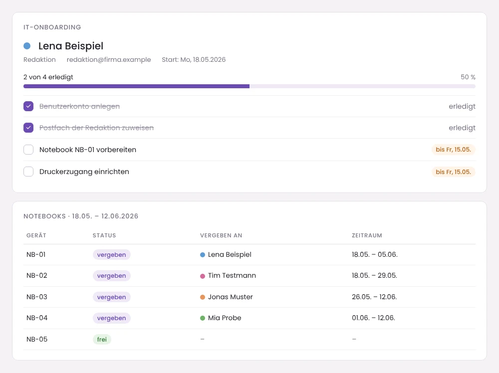

Fallstudie · Internes Tool · UX & Frontend
Praktikantenplanung: Alles für den ersten Tag an einem Ort
Ein internes Planungstool für eine IT-Abteilung. Es zeigt auf einen Blick, wer wann im Haus ist, in welcher Abteilung, mit welchem Notebook, und was die IT vor dem ersten Tag noch vorbereiten muss.
- Rolle
- Konzept, UX, Frontend
- Zeitraum
- 2026
- Technik
- HTML, CSS, JavaScript, Excel-Import/-Export
- Status
- Intern im Einsatz
Aus Datenschutzgründen zeigt diese Fallstudie keine echten Daten. Alle Namen, Abteilungen und Geräte in den Beispielansichten sind erfunden.
Ausgangslage
Praktikantinnen und Praktikanten kommen das ganze Jahr über, in verschiedene Abteilungen und für unterschiedlich lange Zeiträume. Für die IT heißt jeder Start: ein Konto anlegen, das richtige Postfach zuordnen, ein Notebook vorbereiten und am letzten Tag alles wieder einsammeln.
Die Informationen dafür lagen verteilt in Listen und E-Mails. Wer wissen wollte, ob nächste Woche noch ein Notebook frei ist, musste mehrere Quellen zusammensuchen. Genau dort entstehen Fehler: ein vergessenes Postfach, ein doppelt vergebenes Gerät, ein Start an einem Feiertag.
Das Ziel war deshalb ein Tool, in dem alles, was die IT für einen Praktikumsstart braucht, an einem Ort liegt und auf einen Blick verständlich ist.
Die Zeitleiste beantwortet zuerst die wichtigste Frage: Wer ist wann da?
Im Mittelpunkt steht eine Wochenansicht. Jede Person hat eine eigene Farbe, die überall im Tool gleich bleibt, damit man sie in jeder Ansicht sofort wiedererkennt. Feiertage werden automatisch erkannt und grau markiert, statt dass jemand sie von Hand eintragen muss.

Abteilung ausgewählt, Postfach schon zugeordnet
Jede Abteilung ist im Tool mit ihrem passenden Postfach verknüpft. Wer eine Person einer Abteilung zuordnet, muss das Postfach nicht mehr nachschlagen. Das klingt klein, nimmt aber genau die Art von Detailfrage weg, die man sonst jedes Mal neu klären muss.
Notebooks sind Teil der Planung, nicht eine zweite Liste
Die Geräte sind direkt im Tool hinterlegt. Bei der Planung sieht man sofort, welches Notebook im gewünschten Zeitraum frei ist und welches schon vergeben ist. So kann ein Gerät nicht versehentlich zweimal verplant werden.
Eine Checkliste pro Person, damit am ersten Tag nichts fehlt
Für jede Person gibt es eine IT-Onboarding-Checkliste. Sie macht sichtbar, was schon erledigt ist und was noch offen ist, auch wenn jemand anderes aus dem Team weiterarbeitet.

Excel bleibt erlaubt, weil Kolleginnen damit arbeiten
Viele im Haus planen gewohnt in Excel. Statt das zu verbieten, kann das Tool Daten aus Excel übernehmen und wieder als Excel ausgeben. So muss niemand seine Arbeitsweise ändern, um vom Tool zu profitieren.
Mit KI gebaut, von mir entschieden
Den Code habe ich mit Unterstützung von Claude geschrieben. Die Idee, das Konzept, das Design und die Tests kamen von mir: was das Tool zeigen muss, in welcher Reihenfolge und welche Funktionen die IT im Alltag wirklich braucht.
Was ich gelernt habe
- Ein internes Tool hat echte Nutzerinnen. Ich habe es für Kolleginnen gebaut, die ich jeden Tag sehe. Ihr Feedback kam direkt, und jede Funktion ist aus einer konkreten Frage im Alltag entstanden.
- Gute Planung nimmt Nachschlagen weg. Die wertvollsten Funktionen waren nicht die auffälligsten, sondern die, bei denen man etwas nicht mehr suchen muss: das Postfach zur Abteilung, das freie Notebook, der Feiertag.
- Farbe muss mehr als schön sein. Die Farben der Personen mussten auch nebeneinander klar unterscheidbar bleiben. Deshalb steht neben jeder Farbe immer auch der Name.
- Daten nur einmal eingeben. Heute würde ich das Tool direkt an das Active Directory bzw. die Cloud-Verwaltung anbinden, damit Namen, Abteilungen und Konten automatisch übernommen werden, statt sie im Tool noch einmal einzutragen.
Lust auf mehr?
Ich freue mich über Fragen zu diesem Projekt oder ein Gespräch über eine Stelle im Bereich UX/UI und Frontend.